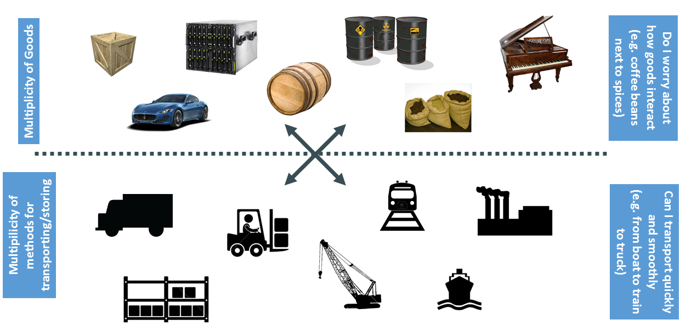
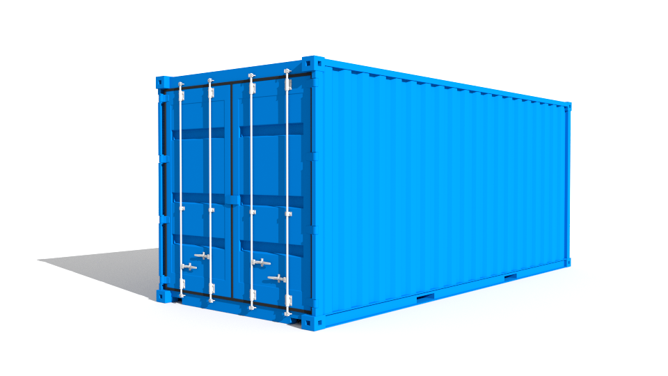
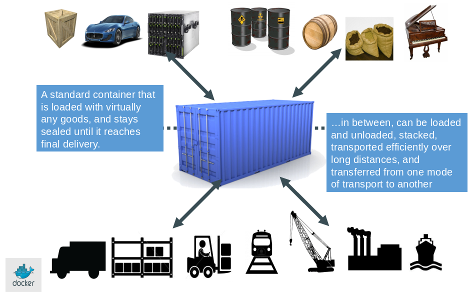
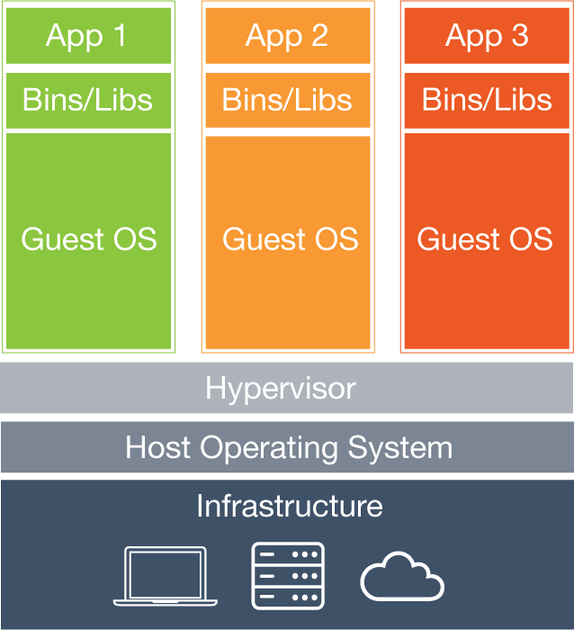
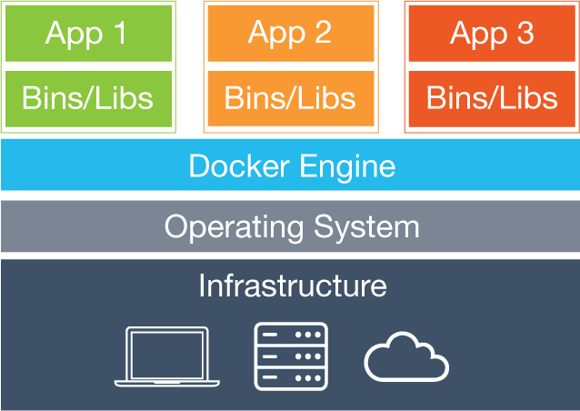
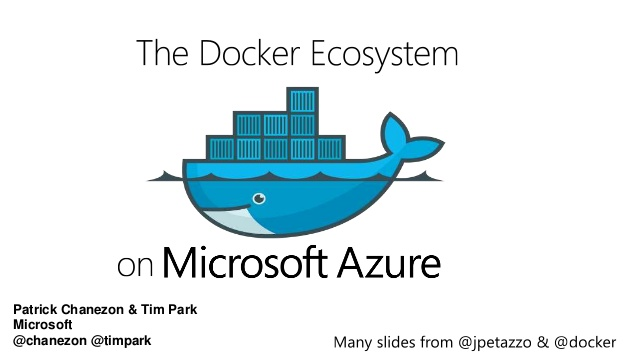
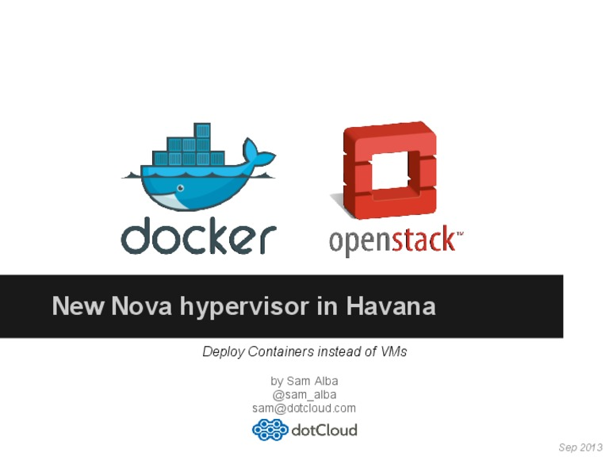

Introduction to Docker
Van-Duyet Le <me@duyetdev.com> / duyetdev.com
Cargo Transport Pre-1960

Solution: Intermodal Shipping Container

docker.io
Docker is an open-source project to easily create lightweight, portable, self-sufficient containers from any application
Source: docker.io
Hypervisor vs Docker Container
| Hypervisor | Docker |
|  |  |
| Runs operating systems | Runs processes |
| Heavyweight isolated virtual machines | Lightweight kernel namespaces [*] |
| VMs start via a full boot-up process | Very fast namespace + process creation [**] |
| Platform-oriented solution | Service-oriented solution |
| Optimized for generality | Optimized for minimalism and speed |
FROM ubuntu
MAINTAINER Victor Vieux (victor@docker.com)
LABEL Description="start the foobar executable"
# Apt update
RUN apt-get update
RUN apt-get install -y inotify-tools
# Install Nginx and OpenSSH
RUN nginx openssh-server
RUN bash -c "./somescript.sh"
# Install Nodejs, bla bla ....
FROM node:510
MAINTAINER Van-Duyet Le (me@duyetdev.com)
# replace this with your application's default port
EXPOSE 8888
$ docker build -t nodejs-app .
$ docker run -it --rm --name ahihi nodejs-app

Slide: Docker Ecosystem on Azure
- Docker homepage
- Docker slides: http://saveto.co/t/docker
- Why docker? https://why-docker.talk.duyetdev.com
{kind=link}
{kind=link}